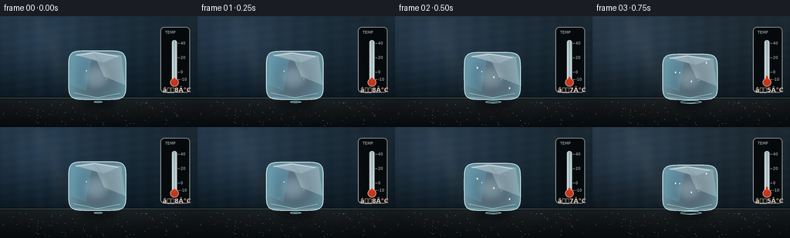
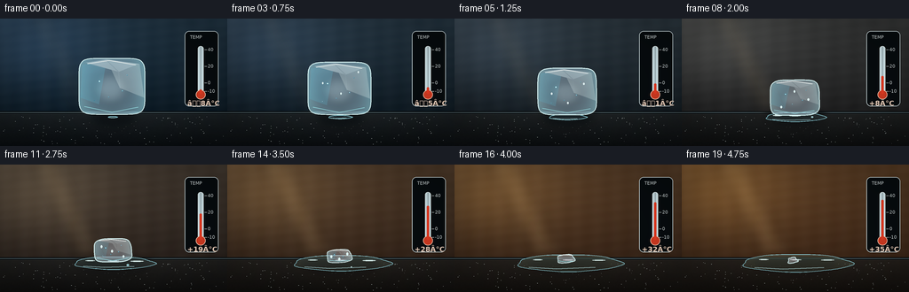

CODING AGENTS AS PIXEL WORLD MODELS
traex/GPT-5.6-Sol · phygen_096
点击播放 · 原生 RGB 像素
逐轮保存的候选
回放视频、检查图与代码变化。
每份候选均可单独播放。实际图片检查记录在下方工具轨迹中。
候选 01播放与检查图
点击播放 · 原生 RGB 像素

展开代码变化
--- 上一保存版本
+++ 本次保存版本
@@ -0,0 +1,275 @@
+from pathlib import Path
+import math
+import numpy as np
+from PIL import Image, ImageDraw, ImageFont, ImageFilter
+import artifact_io
+
+# Deterministic procedural timelapse; no input imagery is used.
+ROOT = Path(__file__).resolve().parent
+W, H, N = 256, 144, 20
+S = 4 # supersampling for smooth, polished edges
+SW, SH = W*S, H*S
+rng = np.random.default_rng(9601)
+
+try:
+ FONT = ImageFont.truetype('/usr/share/fonts/truetype/dejavu/DejaVuSans.ttf', 7*S)
+ FONT_B = ImageFont.truetype('/usr/share/fonts/truetype/dejavu/DejaVuSans-Bold.ttf', 8*S)
+ FONT_T = ImageFont.truetype('/usr/share/fonts/truetype/dejavu/DejaVuSans.ttf', 5*S)
+except Exception:
+ FONT = FONT_B = FONT_T = ImageFont.load_default()
+
+def smoothstep(x):
+ return x*x*(3.0-2.0*x)
+
+def sc(v):
+ return int(round(v*S))
+
+def pts_scaled(points):
+ return [(sc(x), sc(y)) for x, y in points]
+
+def ellipse(draw, box, **kwargs):
+ draw.ellipse(tuple(sc(v) for v in box), **kwargs)
+
+def line(draw, points, **kwargs):
+ if 'width' in kwargs: kwargs['width'] = max(1, sc(kwargs['width']))
+ draw.line(pts_scaled(points), **kwargs)
+
+def polygon(draw, points, **kwargs):
+ draw.polygon(pts_scaled(points), **kwargs)
+
+def irregular_ellipse(cx, cy, rx, ry, phase=0.0, count=120):
+ out = []
+ for j in range(count):
+ a = 2*math.pi*j/count
+ wobble = 1 + .045*math.sin(3*a+phase) + .025*math.sin(7*a+1.3)
+ out.append((cx + rx*math.cos(a)*wobble, cy + ry*math.sin(a)*(1+.035*math.sin(5*a))))
+ return out
+
+def ice_outline(cx, bottom, width, height, melt):
+ # A superellipse changes from a cut cube to a rounded remnant.
+ n = 6.2 - 3.9*melt
+ a, b = width/2, height/2
+ cy = bottom-b
+ out=[]
+ for j in range(180):
+ th = 2*math.pi*j/180
+ c, s = math.cos(th), math.sin(th)
+ x = cx + a*math.copysign(abs(c)**(2/n), c)
+ y = cy + b*math.copysign(abs(s)**(2/n), s)
+ # Stable asymmetry grows as the cube softens.
+ x += melt*(1.2*math.sin(2*th+.4) + .7*math.sin(5*th))
+ y += melt*(.55*math.sin(3*th+1.1))
+ if s > 0: y += melt*1.2*(abs(s)**2)
+ out.append((x,y))
+ return out
+
+# Static stone texture so only the physical event changes.
+yy, xx = np.mgrid[0:SH, 0:SW]
+stone_noise = rng.normal(0, 1, (SH, SW))
+stone_noise_img = Image.fromarray(np.uint8(np.clip(stone_noise*28+128,0,255))).filter(ImageFilter.GaussianBlur(sc(.45)))
+stone_noise = (np.asarray(stone_noise_img).astype(np.float32)-128)/28
+# Tiny fixed mineral flecks.
+flecks = [(rng.uniform(3,253), rng.uniform(110,142), rng.uniform(.12,.38), rng.uniform(.18,.58)) for _ in range(115)]
+
+frames=[]
+for i in range(N):
+ p = i/(N-1)
+ m = smoothstep(p)
+ # Background slowly shifts from refrigerated blue to strong warm amber.
+ cool = np.array([35, 55, 70.], dtype=float)
+ warm = np.array([92, 63, 38.], dtype=float)
+ top_col = cool*(1-m) + warm*m
+ bot_col = np.array([13,27,37.])*(1-m) + np.array([61,39,24.])*m
+ arr = np.zeros((SH,SW,3), np.float32)
+ wall_h = sc(106)
+ for y in range(wall_h):
+ q=y/max(1,wall_h-1)
+ col=top_col*(1-q)+bot_col*q
+ arr[y,:,:]=col
+ # Broad practical light blooming from left, increasing with temperature.
+ glow = np.exp(-(((xx/S-38)/78)**2 + ((yy/S-22)/61)**2))[:,:,None]
+ arr[:,:,:] += glow*np.array([17+30*m, 24+11*m, 34-18*m])
+ # Fine wall grain and a subtle horizontal seam.
+ grain = 1.7*np.sin(xx*.071)+1.0*np.sin(yy*.137+xx*.017)
+ arr[:wall_h] += grain[:wall_h,:,None]
+ # Stone surface gradient.
+ sy = yy/S
+ base = np.clip((sy-106)/38,0,1)[:,:,None]
+ stone0=np.array([29,35,38.])*(1-m)+np.array([39,34,29.])*m
+ stone1=np.array([10,14,17.])*(1-m)+np.array([19,16,13.])*m
+ arr[wall_h:]=stone0*(1-base[wall_h:])+stone1*base[wall_h:]
+ arr[wall_h:] += stone_noise[wall_h:,:,None]*2.3
+ arr=np.uint8(np.clip(arr,0,255))
+ im=Image.fromarray(arr,'RGB').convert('RGBA')
+ d=ImageDraw.Draw(im,'RGBA')
+ # Horizon and reflected warm strip.
+ d.rectangle((0,sc(104.8),SW,sc(107.2)), fill=(8,13,16,125))
+ d.rectangle((0,sc(106),SW,sc(106.35)), fill=(142,168,174,38))
+ # Mineral flecks on counter.
+ for fx,fy,fr,fa in flecks:
+ ellipse(d,(fx-fr,fy-fr*.45,fx+fr,fy+fr*.45),fill=(185,194,191,int(42*fa)))
+
+ # Warm window streak across the background, moving slightly in timelapse.
+ streak=Image.new('RGBA',(SW,SH),(0,0,0,0)); sd=ImageDraw.Draw(streak,'RGBA')
+ sx=31+10*m
+ polygon(sd,[(sx,0),(sx+30,0),(sx+81,105),(sx+51,105)],fill=(255,212,143,int(8+22*m)))
+ streak=streak.filter(ImageFilter.GaussianBlur(sc(7)))
+ im=Image.alpha_composite(im,streak)
+ d=ImageDraw.Draw(im,'RGBA')
+
+ # Thermometer: a clear, stable indication of sharply rising temperature.
+ tx=226
+ # soft panel
+ d.rounded_rectangle((sc(208),sc(14),sc(246),sc(99)),radius=sc(5),fill=(7,12,15,90),outline=(215,231,234,40),width=sc(.65))
+ d.text((sc(214),sc(18)),"TEMP",font=FONT_T,fill=(228,238,238,165))
+ # glass stem, bulb, and red column
+ d.rounded_rectangle((sc(tx-3.2),sc(31),sc(tx+3.2),sc(85)),radius=sc(3),fill=(210,233,239,42),outline=(231,245,246,150),width=sc(.8))
+ ellipse(d,(tx-5.4,80.5,tx+5.4,91.3),fill=(218,61,35,220),outline=(255,205,180,155),width=sc(.7))
+ temp=-8+43*m
+ fill_top=82-(temp+10)/50*47
+ d.rounded_rectangle((sc(tx-1.25),sc(fill_top),sc(tx+1.25),sc(85)),radius=sc(1.2),fill=(240,61,35,235))
+ # ticks and labels emphasize temporal range.
+ for val in (-10,0,20,40):
+ ty=82-(val+10)/50*47
+ line(d,[(tx+4.2,ty),(tx+7.0,ty)],fill=(229,239,240,130),width=.55)
+ d.text((sc(tx+8.0),sc(ty-3.0)),str(val),font=FONT_T,fill=(225,234,234,150))
+ label=(f"{temp:+.0f}°C").replace('-', 'â')
+ # thermometer readout at panel bottom left
+ d.text((sc(211),sc(91)),label,font=FONT_B,fill=(255,224,202,230))
+
+ # Contact shadow grows broad and faint as water spreads.
+ shadow=Image.new('RGBA',(SW,SH),(0,0,0,0)); shd=ImageDraw.Draw(shadow,'RGBA')
+ sw=49+48*m
+ ellipse(shd,(128-sw/2,102.5,128+sw/2,121),fill=(0,4,7,int(105-22*m)))
+ shadow=shadow.filter(ImageFilter.GaussianBlur(sc(4.2)))
+ im=Image.alpha_composite(im,shadow)
+
+ # Expanding irregular puddle; starts as a damp contact ring and becomes dominant.
+ puddle_w=11 + 113*(m**.72)
+ puddle_h=2.1 + 18.5*(m**.78)
+ pcx=127+2*m
+ pcy=111.2
+ puddle_mask=Image.new('L',(SW,SH),0); pmd=ImageDraw.Draw(puddle_mask)
+ polygon(pmd,irregular_ellipse(pcx,pcy,puddle_w/2,puddle_h/2,phase=.8),fill=215)
+ puddle_layer=Image.new('RGBA',(SW,SH),(0,0,0,0))
+ pl=np.zeros((SH,SW,4),np.uint8)
+ pm=np.asarray(puddle_mask).astype(float)/255
+ # glassy water reflects the blue/warm wall and dark counter.
+ q=np.clip((yy/S-(pcy-puddle_h/2))/max(puddle_h,1),0,1)
+ pl[:,:,0]=np.clip(74+34*m-28*q,0,255)
+ pl[:,:,1]=np.clip(122+5*m-45*q,0,255)
+ pl[:,:,2]=np.clip(142-33*m-45*q,0,255)
+ pl[:,:,3]=np.uint8(pm*(66+25*m))
+ puddle_layer=Image.fromarray(pl,'RGBA')
+ im=Image.alpha_composite(im,puddle_layer)
+ d=ImageDraw.Draw(im,'RGBA')
+ # Puddle rim, near-edge and elongated reflected highlights.
+ polygon(d,irregular_ellipse(pcx,pcy,puddle_w/2,puddle_h/2,.8),outline=(145,211,222,95),width=sc(.65))
+ line(d,[(pcx-puddle_w*.38,pcy+puddle_h*.24),(pcx-puddle_w*.12,pcy+puddle_h*.33),(pcx+puddle_w*.25,pcy+puddle_h*.25)],fill=(184,229,231,60),width=.65)
+ for k in range(3):
+ if m > .18+k*.12:
+ ex=pcx-puddle_w*.30+k*puddle_w*.29
+ ellipse(d,(ex-5-k, pcy-puddle_h*.22+k*.3, ex+6+k, pcy-puddle_h*.22+1.1+k*.3),fill=(224,247,244,42))
+
+ # Ice shrinks in volume and loses its crisp corners as melting progresses.
+ iw=64*(1-m)**.73+10
+ ih=58*(1-m)**1.08+5.5
+ ibottom=108.2+2.0*m
+ icx=126+1.7*math.sin(m*math.pi)-1.2*m
+ outline=ice_outline(icx,ibottom,iw,ih,m)
+ mask=Image.new('L',(SW,SH),0); md=ImageDraw.Draw(mask)
+ polygon(md,outline,fill=225)
+ if m>.35:
+ mask=mask.filter(ImageFilter.GaussianBlur(sc(.22+0.38*m)))
+ mask_np=np.asarray(mask).astype(np.float32)/255
+
+ # Refractive body: vertical density, side cyan, warm transmitted center.
+ ix=(xx/S-icx)/max(iw/2,1)
+ iy=(yy/S-(ibottom-ih))/max(ih,1)
+ edge=np.clip(np.abs(ix)**2.8 + np.abs((iy-.5)*1.55)**3,0,1)
+ body=np.zeros((SH,SW,4),np.uint8)
+ body[:,:,0]=np.clip(151 + 31*m + 38*(1-edge),0,255)
+ body[:,:,1]=np.clip(211 + 17*(1-edge) - 18*m,0,255)
+ body[:,:,2]=np.clip(225 + 25*(1-edge) - 31*m,0,255)
+ alpha=(90+72*edge+25*(1-m))*mask_np
+ body[:,:,3]=np.uint8(np.clip(alpha,0,220))
+ im=Image.alpha_composite(im,Image.fromarray(body,'RGBA'))
+
+ # Frosty cloud in the core, fading as the ice clears and melts.
+ if ih>8:
+ cloud=Image.new('RGBA',(SW,SH),(0,0,0,0)); cd=ImageDraw.Draw(cloud,'RGBA')
+ ellipse(cd,(icx-iw*.27, ibottom-ih*.73, icx+iw*.23, ibottom-ih*.19),fill=(222,244,246,int(74*(1-m))))
+ cloud=cloud.filter(ImageFilter.GaussianBlur(sc(4.8*(1-m)+1.0)))
+ cloud.putalpha(Image.composite(cloud.getchannel('A'),Image.new('L',(SW,SH),0),mask))
+ im=Image.alpha_composite(im,cloud)
+
+ # Facet planes clipped by the silhouette.
+ facets=Image.new('RGBA',(SW,SH),(0,0,0,0)); fd=ImageDraw.Draw(facets,'RGBA')
+ top=ibottom-ih; left=icx-iw/2; right=icx+iw/2
+ if ih>12:
+ polygon(fd,[(left+iw*.05,top+ih*.12),(icx-iw*.08,top+ih*.02),(icx-iw*.20,ibottom-ih*.18),(left+iw*.02,ibottom-ih*.30)],fill=(95,184,210,int(38+36*(1-m))))
+ polygon(fd,[(icx-iw*.08,top+ih*.02),(right-iw*.08,top+ih*.10),(right-iw*.01,ibottom-ih*.30),(icx+iw*.12,ibottom-ih*.47)],fill=(237,252,249,int(32+42*(1-m))))
+ polygon(fd,[(left+iw*.10,top+ih*.08),(icx-iw*.08,top+ih*.02),(right-iw*.09,top+ih*.10),(icx+iw*.10,top+ih*.24)],fill=(235,253,255,int(82*(1-m)+35)))
+ line(fd,[(icx-iw*.08,top+ih*.04),(icx+iw*.10,top+ih*.24),(icx+iw*.12,ibottom-ih*.47)],fill=(235,252,253,int(88*(1-m))),width=.65)
+ line(fd,[(left+iw*.10,top+ih*.12),(icx-iw*.20,ibottom-ih*.18)],fill=(98,180,207,int(70*(1-m))),width=.55)
+ facets.putalpha(Image.composite(facets.getchannel('A'),Image.new('L',(SW,SH),0),mask))
+ im=Image.alpha_composite(im,facets)
+ d=ImageDraw.Draw(im,'RGBA')
+
+ # Bright wet contour and base caustic.
+ line(d,outline+[outline[0]],fill=(218,247,247,int(155-35*m)),width=.75+0.35*(1-m))
+ if ih>8:
+ line(d,[(left+iw*.13,top+ih*.10),(icx-iw*.04,top+ih*.04),(right-iw*.14,top+ih*.12)],fill=(255,255,250,175),width=.85)
+ line(d,[(left+iw*.08,ibottom-ih*.14),(icx,ibottom-ih*.04),(right-iw*.10,ibottom-ih*.13)],fill=(159,236,241,125),width=.8)
+
+ # Small trapped air bubbles remain tied to the diminishing chunk.
+ bubbles=[(-.19,.41,1.15),(.16,.58,.75),(-.05,.69,.52),(.23,.30,.45),(-.27,.75,.36)]
+ for bx,by,br in bubbles:
+ if by < .9 and ih>10:
+ x=icx+bx*iw; y=top+by*ih
+ r=max(.25,br*(1-.42*m))
+ ellipse(d,(x-r,y-r,x+r,y+r),fill=(236,252,250,42),outline=(57,135,160,95),width=sc(.4))
+ ellipse(d,(x-r*.38,y-r*.52,x+r*.05,y-r*.10),fill=(255,255,255,130))
+
+ # Time-lapse melt rivulets; positions evolve down the surface.
+ if .10 < p < .94 and ih>11:
+ for k, phase in enumerate((.0,.31,.67)):
+ local=(p*2.2+phase)%1
+ x=icx + (-.28+.29*k)*iw + 1.2*math.sin(p*7+k)
+ y=top+ih*(.18+.64*local)
+ rr=.75+.45*m
+ ellipse(d,(x-rr,y-rr*1.5,x+rr,y+rr*1.5),fill=(221,250,248,125),outline=(255,255,255,85),width=sc(.35))
+
+ # A detached bead at the front edge in the middle of the melt.
+ if .32 < p < .78:
+ q=(p-.32)/.46
+ bx=icx+iw*.34+5*q
+ by=ibottom+1.1+5.1*q
+ rr=1.45*(math.sin(math.pi*q)**.55)
+ ellipse(d,(bx-rr,by-rr*.72,bx+rr,by+rr*.72),fill=(112,191,207,115),outline=(220,250,247,130),width=sc(.45))
+
+ # Very subtle heat shimmer at late times indicates the large thermal rise.
+ if p>.72:
+ vapor=Image.new('RGBA',(SW,SH),(0,0,0,0)); vd=ImageDraw.Draw(vapor,'RGBA')
+ a=int(22*(p-.72)/.28)
+ for k in range(2):
+ x=111+28*k+2*math.sin(i*.7+k)
+ y0=101-k*2
+ curve=[]
+ for z in range(25):
+ curve.append((x+2.2*math.sin(z*.33+i*.19+k),y0-z*.8))
+ line(vd,curve,fill=(240,224,201,a),width=1.1)
+ vapor=vapor.filter(ImageFilter.GaussianBlur(sc(1.3)))
+ im=Image.alpha_composite(im,vapor)
+
+ # Cinematic vignette and final downsample.
+ rgb=np.asarray(im.convert('RGB')).astype(np.float32)
+ nx=(xx/S-W/2)/(W/2); ny=(yy/S-H/2)/(H/2)
+ vig=np.clip(1-.17*(nx*nx+ny*ny),.77,1)[:,:,None]
+ rgb=np.uint8(np.clip(rgb*vig,0,255))
+ final=Image.fromarray(rgb,'RGB').resize((W,H),Image.Resampling.LANCZOS)
+ frames.append(np.asarray(final,dtype=np.uint8))
+
+frames=np.stack(frames,axis=0)
+artifact_io.save(frames, ROOT)
+print(f"saved {frames.shape} RGB frames")
候选 02播放与检查图
点击播放 · 原生 RGB 像素


展开代码变化
--- 上一保存版本
+++ 本次保存版本
@@ -133,7 +133,8 @@
ty=82-(val+10)/50*47
line(d,[(tx+4.2,ty),(tx+7.0,ty)],fill=(229,239,240,130),width=.55)
d.text((sc(tx+8.0),sc(ty-3.0)),str(val),font=FONT_T,fill=(225,234,234,150))
- label=(f"{temp:+.0f}°C").replace('-', 'â')
+ # ASCII readout stays crisp and portable at this small output resolution.
+ label=f"{temp:+.0f} C"
# thermometer readout at panel bottom left
d.text((sc(211),sc(91)),label,font=FONT_B,fill=(255,224,202,230))
候选 03播放与检查图
可观测工具轨迹
实际执行的命令与返回图片。
命令 1exit 0
/bin/bash -lc "cat prompt.txt && printf '\\n--- GENERATION_RULES.md ---\\n' && cat GENERATION_RULES.md && printf '\\n--- task_spec.json ---\\n' && cat task_spec.json"
命令 2exit 0
/bin/bash -lc "find . -maxdepth 3 -type f -printf '%p\\n' | sort && printf '\\n--- binaries ---\\n' && command -v ffmpeg || true && command -v blender || true && command -v python3 || true"
命令 3exit 0
/bin/bash -lc 'cat artifact_io.py'
命令 4exit 0
/bin/bash -lc "cat > generate.py <<'PY'
from pathlib import Path
import math
import numpy as np
from PIL import Image, ImageDraw, ImageFont, ImageFilter
import artifact_io
# Deterministic procedural timelapse; no input imagery is used.
ROOT = Path(__file__).resolve().parent
W, H, N = 256, 144, 20
S = 4 # supersampling for smooth, polished edges
SW, SH = W*S, H*S
rng = np.random.default_rng(9601)
try:
FONT = ImageFont.truetype('/usr/share/fonts/truetype/dejavu/DejaVuSans.ttf', 7*S)
FONT_B = ImageFont.truetype('/usr/share/fonts/truetype/dejavu/DejaVuSans-Bold.ttf', 8*S)
FONT_T = ImageFont.truetype('/usr/share/fonts/truetype/dejavu/DejaVuSans.ttf', 5*S)
except Exception:
FONT = FONT_B = FONT_T = ImageFont.load_default()
def smoothstep(x):
return x*x*(3.0-2.0*x)
def sc(v):
return int(round(v*S))
def pts_scaled(points):
return [(sc(x), sc(y)) for x, y in points]
def ellipse(draw, box, **kwargs):
draw.ellipse(tuple(sc(v) for v in box), **kwargs)
def line(draw, points, **kwargs):
if 'width' in kwargs: kwargs['width'] = max(1, sc(kwargs['width']))
draw.line(pts_scaled(points), **kwargs)
def polygon(draw, points, **kwargs):
draw.polygon(pts_scaled(points), **kwargs)
def irregular_ellipse(cx, cy, rx, ry, phase=0.0, count=120):
out = []
for j in range(count):
a = 2*math.pi*j/count
wobble = 1 + .045*math.sin(3*a+phase) + .025*math.sin(7*a+1.3)
out.append((cx + rx*math.cos(a)*wobble, cy + ry*math.sin(a)*(1+.035*math.sin(5*a))))
return out
def ice_outline(cx, bottom, width, height, melt):
# A superellipse changes from a cut cube to a rounded remnant.
n = 6.2 - 3.9*melt
a, b = width/2, height/2
cy = bottom-b
out=[]
for j in range(180):
th = 2*math.pi*j/180
c, s = math.cos(th), math.sin(th)
x = cx + a*math.copysign(abs(c)**(2/n), c)
y = cy + b*math.copysign(abs(s)**(2/n), s)
# Stable asymmetry grows as the cube softens.
x += melt*(1.2*math.sin(2*th+.4) + .7*math.sin(5*th))
y += melt*(.55*math.sin(3*th+1.1))
if s > 0: y += melt*1.2*(abs(s)**2)
out.append((x,y))
return out
# Static stone texture so only the physical event changes.
yy, xx = np.mgrid[0:SH, 0:SW]
stone_noise = rng.normal(0, 1, (SH, SW))
stone_noise_img = Image.fromarray(np.uint8(np.clip(stone_noise*28+128,0,255))).filter(ImageFilter.GaussianBlur(sc(.45)))
stone_noise = (np.asarray(stone_noise_img).astype(np.float32)-128)/28
# Tiny fixed mineral flecks.
flecks = [(rng.uniform(3,253), rng.uniform(110,142), rng.uniform(.12,.38), rng.uniform(.18,.58)) for _ in range(115)]
frames=[]
for i in range(N):
p = i/(N-1)
m = smoothstep(p)
# Background slowly shifts from refrigerated blue to strong warm amber.
cool = np.array([35, 55, 70.], dtype=float)
warm = np.array([92, 63, 38.], dtype=float)
top_col = cool*(1-m) + warm*m
bot_col = np.array([13,27,37.])*(1-m) + np.array([61,39,24.])*m
arr = np.zeros((SH,SW,3), np.float32)
wall_h = sc(106)
for y in range(wall_h):
q=y/max(1,wall_h-1)
col=top_col*(1-q)+bot_col*q
arr[y,:,:]=col
# Broad practical light blooming from left, increasing with temperature.
glow = np.exp(-(((xx/S-38)/78)**2 + ((yy/S-22)/61)**2))[:,:,None]
arr[:,:,:] += glow*np.array([17+30*m, 24+11*m, 34-18*m])
# Fine wall grain and a subtle horizontal seam.
grain = 1.7*np.sin(xx*.071)+1.0*np.sin(yy*.137+xx*.017)
arr[:wall_h] += grain[:wall_h,:,None]
# Stone surface gradient.
sy = yy/S
base = np.clip((sy-106)/38,0,1)[:,:,None]
stone0=np.array([29,35,38.])*(1-m)+np.array([39,34,29.])*m
stone1=np.array([10,14,17.])*(1-m)+np.array([19,16,13.])*m
arr[wall_h:]=stone0*(1-base[wall_h:])+stone1*base[wall_h:]
arr[wall_h:] += stone_noise[wall_h:,:,None]*2.3
arr=np.uint8(np.clip(arr,0,255))
im=Image.fromarray(arr,'RGB').convert('RGBA')
d=ImageDraw.Draw(im,'RGBA')
# Horizon and reflected warm strip.
d.rectangle((0,sc(104.8),SW,sc(107.2)), fill=(8,13,16,125))
d.rectangle((0,sc(106),SW,sc(106.35)), fill=(142,168,174,38))
# Mineral flecks on counter.
for fx,fy,fr,fa in flecks:
ellipse(d,(fx-fr,fy-fr*.45,fx+fr,fy+fr*.45),fill=(185,194,191,int(42*fa)))
# Warm window streak across the background, moving slightly in timelapse.
streak=Image.new('RGBA',(SW,SH),(0,0,0,0)); sd=ImageDraw.Draw(streak,'RGBA')
sx=31+10*m
polygon(sd,[(sx,0),(sx+30,0),(sx+81,105),(sx+51,105)],fill=(255,212,143,int(8+22*m)))
streak=streak.filter(ImageFilter.GaussianBlur(sc(7)))
im=Image.alpha_composite(im,streak)
d=ImageDraw.Draw(im,'RGBA')
# Thermometer: a clear, stable indication of sharply rising temperature.
tx=226
# soft panel
d.rounded_rectangle((sc(208),sc(14),sc(246),sc(99)),radius=sc(5),fill=(7,12,15,90),outline=(215,231,234,40),width=sc(.65))
d.text((sc(214),sc(18)),\"TEMP\",font=FONT_T,fill=(228,238,238,165))
# glass stem, bulb, and red column
d.rounded_rectangle((sc(tx-3.2),sc(31),sc(tx+3.2),sc(85)),radius=sc(3),fill=(210,233,239,42),outline=(231,245,246,150),width=sc(.8))
ellipse(d,(tx-5.4,80.5,tx+5.4,91.3),fill=(218,61,35,220),outline=(255,205,180,155),width=sc(.7))
temp=-8+43*m
fill_top=82-(temp+10)/50*47
d.rounded_rectangle((sc(tx-1.25),sc(fill_top),sc(tx+1.25),sc(85)),radius=sc(1.2),fill=(240,61,35,235))
# ticks and labels emphasize temporal range.
for val in (-10,0,20,40):
ty=82-(val+10)/50*47
line(d,[(tx+4.2,ty),(tx+7.0,ty)],fill=(229,239,240,130),width=.55)
d.text((sc(tx+8.0),sc(ty-3.0)),str(val),font=FONT_T,fill=(225,234,234,150))
label=(f\"{temp:+.0f}°C\").replace('-', 'â')
# thermometer readout at panel bottom left
d.text((sc(211),sc(91)),label,font=FONT_B,fill=(255,224,202,230))
# Contact shadow grows broad and faint as water spreads.
shadow=Image.new('RGBA',(SW,SH),(0,0,0,0)); shd=ImageDraw.Draw(shadow,'RGBA')
sw=49+48*m
ellipse(shd,(128-sw/2,102.5,128+sw/2,121),fill=(0,4,7,int(105-22*m)))
shadow=shadow.filter(ImageFilter.GaussianBlur(sc(4.2)))
im=Image.alpha_composite(im,shadow)
# Expanding irregular puddle; starts as a damp contact ring and becomes dominant.
puddle_w=11 + 113*(m**.72)
puddle_h=2.1 + 18.5*(m**.78)
pcx=127+2*m
pcy=111.2
puddle_mask=Image.new('L',(SW,SH),0); pmd=ImageDraw.Draw(puddle_mask)
polygon(pmd,irregular_ellipse(pcx,pcy,puddle_w/2,puddle_h/2,phase=.8),fill=215)
puddle_layer=Image.new('RGBA',(SW,SH),(0,0,0,0))
pl=np.zeros((SH,SW,4),np.uint8)
pm=np.asarray(puddle_mask).astype(float)/255
# glassy water reflects the blue/warm wall and dark counter.
q=np.clip((yy/S-(pcy-puddle_h/2))/max(puddle_h,1),0,1)
pl[:,:,0]=np.clip(74+34*m-28*q,0,255)
pl[:,:,1]=np.clip(122+5*m-45*q,0,255)
pl[:,:,2]=np.clip(142-33*m-45*q,0,255)
pl[:,:,3]=np.uint8(pm*(66+25*m))
puddle_layer=Image.fromarray(pl,'RGBA')
im=Image.alpha_composite(im,puddle_layer)
d=ImageDraw.Draw(im,'RGBA')
# Puddle rim, near-edge and elongated reflected highlights.
polygon(d,irregular_ellipse(pcx,pcy,puddle_w/2,puddle_h/2,.8),outline=(145,211,222,95),width=sc(.65))
line(d,[(pcx-puddle_w*.38,pcy+puddle_h*.24),(pcx-puddle_w*.12,pcy+puddle_h*.33),(pcx+puddle_w*.25,pcy+puddle_h*.25)],fill=(184,229,231,60),width=.65)
for k in range(3):
if m > .18+k*.12:
ex=pcx-puddle_w*.30+k*puddle_w*.29
ellipse(d,(ex-5-k, pcy-puddle_h*.22+k*.3, ex+6+k, pcy-puddle_h*.22+1.1+k*.3),fill=(224,247,244,42))
# Ice shrinks in volume and loses its crisp corners as melting progresses.
iw=64*(1-m)**.73+10
ih=58*(1-m)**1.08+5.5
ibottom=108.2+2.0*m
icx=126+1.7*math.sin(m*math.pi)-1.2*m
outline=ice_outline(icx,ibottom,iw,ih,m)
mask=Image.new('L',(SW,SH),0); md=ImageDraw.Draw(mask)
polygon(md,outline,fill=225)
if m>.35:
mask=mask.filter(ImageFilter.GaussianBlur(sc(.22+0.38*m)))
mask_np=np.asarray(mask).astype(np.float32)/255
# Refractive body: vertical density, side cyan, warm transmitted center.
ix=(xx/S-icx)/max(iw/2,1)
iy=(yy/S-(ibottom-ih))/max(ih,1)
edge=np.clip(np.abs(ix)**2.8 + np.abs((iy-.5)*1.55)**3,0,1)
body=np.zeros((SH,SW,4),np.uint8)
body[:,:,0]=np.clip(151 + 31*m + 38*(1-edge),0,255)
body[:,:,1]=np.clip(211 + 17*(1-edge) - 18*m,0,255)
body[:,:,2]=np.clip(225 + 25*(1-edge) - 31*m,0,255)
alpha=(90+72*edge+25*(1-m))*mask_np
body[:,:,3]=np.uint8(np.clip(alpha,0,220))
im=Image.alpha_composite(im,Image.fromarray(body,'RGBA'))
# Frosty cloud in the core, fading as the ice clears and melts.
if ih>8:
cloud=Image.new('RGBA',(SW,SH),(0,0,0,0)); cd=ImageDraw.Draw(cloud,'RGBA')
ellipse(cd,(icx-iw*.27, ibottom-ih*.73, icx+iw*.23, ibottom-ih*.19),fill=(222,244,246,int(74*(1-m))))
cloud=cloud.filter(ImageFilter.GaussianBlur(sc(4.8*(1-m)+1.0)))
cloud.putalpha(Image.composite(cloud.getchannel('A'),Image.new('L',(SW,SH),0),mask))
im=Image.alpha_composite(im,cloud)
# Facet planes clipped by the silhouette.
facets=Image.new('RGBA',(SW,SH),(0,0,0,0)); fd=ImageDraw.Draw(facets,'RGBA')
top=ibottom-ih; left=icx-iw/2; right=icx+iw/2
if ih>12:
polygon(fd,[(left+iw*.05,top+ih*.12),(icx-iw*.08,top+ih*.02),(icx-iw*.20,ibottom-ih*.18),(left+iw*.02,ibottom-ih*.30)],fill=(95,184,210,int(38+36*(1-m))))
polygon(fd,[(icx-iw*.08,top+ih*.02),(right-iw*.08,top+ih*.10),(right-iw*.01,ibottom-ih*.30),(icx+iw*.12,ibottom-ih*.47)],fill=(237,252,249,int(32+42*(1-m))))
polygon(fd,[(left+iw*.10,top+ih*.08),(icx-iw*.08,top+ih*.02),(right-iw*.09,top+ih*.10),(icx+iw*.10,top+ih*.24)],fill=(235,253,255,int(82*(1-m)+35)))
line(fd,[(icx-iw*.08,top+ih*.04),(icx+iw*.10,top+ih*.24),(icx+iw*.12,ibottom-ih*.47)],fill=(235,252,253,int(88*(1-m))),width=.65)
line(fd,[(left+iw*.10,top+ih*.12),(icx-iw*.20,ibottom-ih*.18)],fill=(98,180,207,int(70*(1-m))),width=.55)
facets.putalpha(Image.composite(facets.getchannel('A'),Image.new('L',(SW,SH),0),mask))
im=Image.alpha_composite(im,facets)
d=ImageDraw.Draw(im,'RGBA')
# Bright wet contour and base caustic.
line(d,outline+[outline[0]],fill=(218,247,247,int(155-35*m)),width=.75+0.35*(1-m))
if ih>8:
line(d,[(left+iw*.13,top+ih*.10),(icx-iw*.04,top+ih*.04),(right-iw*.14,top+ih*.12)],fill=(255,255,250,175),width=.85)
line(d,[(left+iw*.08,ibottom-ih*.14),(icx,ibottom-ih*.04),(right-iw*.10,ibottom-ih*.13)],fill=(159,236,241,125),width=.8)
# Small trapped air bubbles remain tied to the diminishing chunk.
bubbles=[(-.19,.41,1.15),(.16,.58,.75),(-.05,.69,.52),(.23,.30,.45),(-.27,.75,.36)]
for bx,by,br in bubbles:
if by < .9 and ih>10:
x=icx+bx*iw; y=top+by*ih
r=max(.25,br*(1-.42*m))
ellipse(d,(x-r,y-r,x+r,y+r),fill=(236,252,250,42),outline=(57,135,160,95),width=sc(.4))
ellipse(d,(x-r*.38,y-r*.52,x+r*.05,y-r*.10),fill=(255,255,255,130))
# Time-lapse melt rivulets; positions evolve down the surface.
if .10 < p < .94 and ih>11:
for k, phase in enumerate((.0,.31,.67)):
local=(p*2.2+phase)%1
x=icx + (-.28+.29*k)*iw + 1.2*math.sin(p*7+k)
y=top+ih*(.18+.64*local)
rr=.75+.45*m
ellipse(d,(x-rr,y-rr*1.5,x+rr,y+rr*1.5),fill=(221,250,248,125),outline=(255,255,255,85),width=sc(.35))
# A detached bead at the front edge in the middle of the melt.
if .32 < p < .78:
q=(p-.32)/.46
bx=icx+iw*.34+5*q
by=ibottom+1.1+5.1*q
rr=1.45*(math.sin(math.pi*q)**.55)
ellipse(d,(bx-rr,by-rr*.72,bx+rr,by+rr*.72),fill=(112,191,207,115),outline=(220,250,247,130),width=sc(.45))
# Very subtle heat shimmer at late times indicates the large thermal rise.
if p>.72:
vapor=Image.new('RGBA',(SW,SH),(0,0,0,0)); vd=ImageDraw.Draw(vapor,'RGBA')
a=int(22*(p-.72)/.28)
for k in range(2):
x=111+28*k+2*math.sin(i*.7+k)
y0=101-k*2
curve=[]
for z in range(25):
curve.append((x+2.2*math.sin(z*.33+i*.19+k),y0-z*.8))
line(vd,curve,fill=(240,224,201,a),width=1.1)
vapor=vapor.filter(ImageFilter.GaussianBlur(sc(1.3)))
im=Image.alpha_composite(im,vapor)
# Cinematic vignette and final downsample.
rgb=np.asarray(im.convert('RGB')).astype(np.float32)
nx=(xx/S-W/2)/(W/2); ny=(yy/S-H/2)/(H/2)
vig=np.clip(1-.17*(nx*nx+ny*ny),.77,1)[:,:,None]
rgb=np.uint8(np.clip(rgb*vig,0,255))
final=Image.fromarray(rgb,'RGB').resize((W,H),Image.Resampling.LANCZOS)
frames.append(np.asarray(final,dtype=np.uint8))
frames=np.stack(frames,axis=0)
artifact_io.save(frames, ROOT)
print(f\"saved {frames.shape} RGB frames\")
PY
python3 generate.py
ls -lh pixels.npz inspection.png transition_check.png index.html frames/00.png frames/19.png"命令 5exit 0
/bin/bash -lc 'grep -n "label=" generate.py | cat -v'
命令 6exit 0
/bin/bash -lc "python3 - <<'PY'
from pathlib import Path
p=Path('generate.py')
s=p.read_text()
lines=s.splitlines()
for j,x in enumerate(lines):
if x.lstrip().startswith('label='):
lines[j]=' # ASCII readout stays crisp and portable at this small output resolution.'
lines.insert(j+1, ' label=f\"{temp:+.0f} C\"')
break
p.write_text('\\n'.join(lines)+'\\n')
PY
python3 generate.py
python3 - <<'PY'
import json, numpy as np
from PIL import Image
from pathlib import Path
spec=json.loads(Path('task_spec.json').read_text())
z=np.load('pixels.npz')['pixels']
files=sorted(Path('frames').glob('*.png'))
ims=np.stack([np.asarray(Image.open(x).convert('RGB')) for x in files])
packed=((ims[:,:,:,0].astype(np.uint32)<<16)|(ims[:,:,:,1].astype(np.uint32)<<8)|ims[:,:,:,2].astype(np.uint32)).transpose(1,2,0)
print('frames:', ims.shape, ims.dtype, 'files:', len(files))
print('spec:', spec)
print('packed artifact match:', np.array_equal(z,packed))
print('mean frame changes:', [round(float(np.mean(np.abs(ims[k].astype(float)-ims[k-1].astype(float)))),2) for k in (1,5,10,15,19)])
print('required:', {x:Path(x).exists() for x in ['generate.py','pixels.npz','index.html','inspection.png','transition_check.png']})
PY"视觉工具实际返回图片 1

保存候选 3 份；完成命令 6 次；可验证图片返回 1 张。原始 API 响应与完整日志保留在本地。